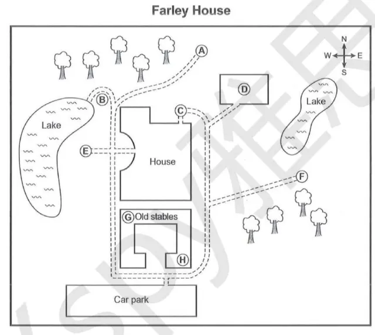

Part 1 of 4
Hinchingbrooke Country Park
Questions 1–10
Questions 1–10
Complete the notes below.
Write ONE WORD AND/OR A NUMBER for each answer.
Questions 11–20

Choose the correct letter, A, B or C.
Label the map below.
Write the correct letter, A–H, next to Questions 16–20.
Questions 21–30
What is the students’ opinion about each of the following food trends?
Choose SIX answers from the box and write the correct letter, A-H, next to Questions 25–30.
Questions 31–40
Complete the notes below.
Write ONE WORD ONLY for each answer.